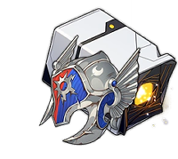
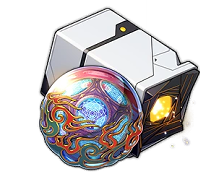

2x Pcs Traversing Hackerspace + 2Pcs Passerby of Wandering Clouds
Gallagher would need at least 150% Break Effect in combat to maximize the Outgoing Healing buff from his Bonus Ability. As for Gallagher's Rope piece, Energy Regeneration is the best for more frequent Ultimates. You can opt to use Break Effect to
reach his 150% BE requirement and increase his damage in Super Break teams.

4x Pcs Warrior Goddess of Sun and Thunder
Gallagher can use Warrior Goddess of Sun and Thunder can be Gallagher's best relic if he's not in a
Break-centric team thanks to the party-wide CRIT DMG it provides. Alongside the Speed boost the set provides in exchange for a lower healing breakpoint.
Gallagher can charge his ultimate as quickly as possible.

2x Pcs Forge of the Kalpagni Lantern
Forge of the Kalpagni Lantern provides Gallagher with SPD and Break Effect buffs,
with the latter being applicable as long as he attacks an enemy with a Fire Weakness, providing a much faster enemy shield breaking and a bigger damage output.